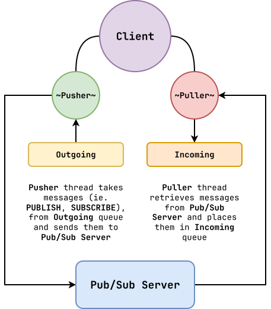
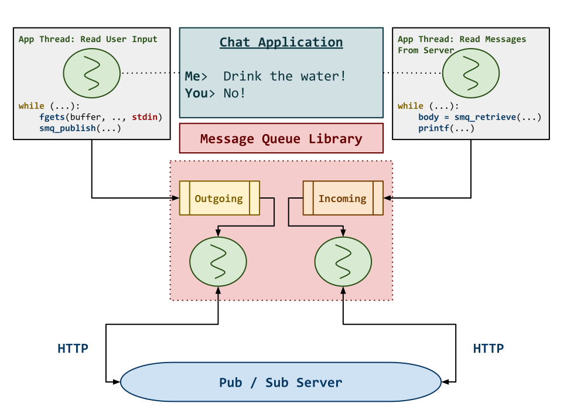
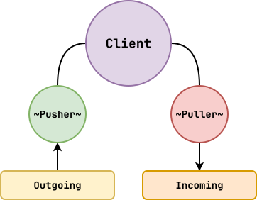

Review: Synchronization Primitives¶
-
Project 02: Should have everything you need... but will discuss overall structure towards the end of class.
-
Interview 02: Signups out by Thursday.
-
Synchronization Primitives:
-
Mutexes: Avoid race conditions
-
Condition Variables: Avoid busy waiting and deadlock
Semaphores: Overview¶
A semaphore is a synchronization primitive that consists of an integer that we can manipulate with two operations:
def sem_wait(s): s.value-- if s.value < 0: thread_wait()def sem_post(s): s.value++ if threads_waiting(): threads_wakeup_next()Semaphores combine the mutual exclusion of a lock and the signaling of a condition variable.
Observations: Typically we do locks and condition variables togather and semaphores separately (don't mix).
Semaphores: Lock¶
To use a semaphore as a lock:
-
Initialize the semaphore to
1. -
Perform a Wait to acquire the lock.
-
Perform a Post to release the lock.
// Initialize lock sem_t m; sem_init(&m, 0, 1); // Perform Lock sem_wait(&m); // Do critical section sem_post(&m);Semaphores: Condition Variable¶
To use a semaphore as a condition variable:
-
Initialize the semaphore to
0. -
Perform a Wait to wait on the condition variable.
-
Perform a Post to signal the condition variable.
// Initialize cond var sem_t cv; sem_init(&cv, 0, 0); // Thread 1: Wait sem_wait(&cv); do_the_thing(); // Thread 2: Signal do_another_thing(); sem_post(&cv);Reading 05: sha1sum (queue.h)¶
// queue.h struct Queue { const char **data; const char *sentinel; size_t capacity; ... }; Queue * queue_create(char * sentinel, size_t capacity); void queue_delete(Queue *q); void queue_push(Queue *q, const char *value); const char * queue_pop(Queue *q);Review:
-
Why two condition variables? Signal correct thread.
-
Why while loops in methods? Condition may not have changed.
-
Which concurrency patterns?
-
Producer/Consumer (organize work)
-
Monitor (abstract synchronization)
-
Threadpool (limit concurrency)
Reading 05: sha1sum (main)¶
int main(int argc, char *argv[]) { Queue *q = queue_create(SENTINEL, QSIZE); Thread thread[MAX_THREADS]; /* Create MAX_THREADS consumer threads */ for (int t = 0; t < MAX_THREADS; t++) { thread_create(&thread[t], NULL, sha1sum_thread, (void *)q); } /* Put all arguments into queue */ for (int i = 1; i < argc; i++) { queue_push(q, argv[i]); } queue_push(q, q->sentinel); // Leave out to demonstrate hang /* Join each consumer thread */ size_t pstatus = 0; size_t tstatus = 0; for (int t = 0; t < MAX_THREADS; t++) { thread_join(thread[t], (void **)&tstatus); pstatus += tstatus; } queue_delete(q); return pstatus; }Reading 05: sha1sum (thread)¶
void *sha1sum_thread(void *arg) { Queue *q = (Queue *)arg; size_t failures = 0; const char *path = queue_pop(q); // Loop until we see sentinel (just compare pointers) while (path != q->sentinel) { char cksum[SHA_DIGEST_LENGTH*2 + 1]; if (sha1sum_file(path, cksum)) { printf("%s %s\n", cksum, path); } else { failures++; } path = queue_pop(q); } return (void *)failures; }Discussion:
-
Threadpool starts
Nthreads that constantly fetch work from queue. -
Similar to Process Pool in Hulk.
-
Need to modify
queue_popto signal consumer if sentinel in place.
Reading 05: Semaphore¶
Let's do the exact same probems... with semaphores.
// queue.h struct Queue { ... sem_t lock; sem_t produced; sem_t consumed; };// queue.c queue_create(...) { Queue *q = calloc(1, sizeof(Queue)); if (q) { sem_init(&q->lock , 0, 1); sem_init(&q->produced, 0, 0); sem_init(&q->consumed, 0, q->capacity); // Start with 0 } return q; }// queue.c queue_push(Queue *q, int value) { sem_wait(&q->consumed); sem_wait(&q->lock); ... sem_wait(&q->lock); sem_wait(&q->produced); } queue_pop(Queue *q) { sem_wait(&q->produced); sem_wait(&q->lock); int value = q->data[q->reader]; ... sem_post(&q->lock); if (value != q->sentinel) { sem_post(&q->consumed); } else { sem_post(&q->produced); } }Do not sleep with the lock!!!
Similar to slacklining example... rate-limiting / throttling.
Project 02: Pub / Sub¶

Observations:
-
Queue in Project 02 uses linked list, therefore is unbounded (
queue_popshould block). -
We have both incoming and outgoing becuase we are synchronizing between internal library threads and the application** thread!
Project 02: Chat Application¶

Observations:
-
Look through documentation of
libcurl(checkout Slack)... OK to copy and paste from documentation. -
Simple skeleton provided.
- Application protocol is up to you.
Project 02: Pusher / Puller¶

Pusher():
while smq_running():
-
Pop request from outgoing.
-
Perform request.
-
Verify response (don't care)
Puller():
- Create request.
while smq_running():
-
Perform request.
-
Verify response.
-
Push request with body into incoming.
Hint: To test/debug run
mq_server.pymanually in a separate window.Semaphores: Reader-Writer Locks¶
With semaphores, we can create interesting synchronization objects such as reader-writer locks:
-
Once readers acquire the writelock, as many readers as possible can read the data.
-
Once a writer acquires the writelock, no one else can access the data.
-
Unfortunately, this can add overhead and is prone to starvation.
Semaphores: Reader Preference¶
size_t Readers = 0 sem_t WriterLock = 1 sem_t ReaderLock = 1 Writer(): sem_wait(&WriterLock) do_write() sem_post(&WriterLock)- Pro: Allows multiple readers
- Con: Writer may starve
Reader(): sem_wait(&ReaderLock) if Readers == 0: sem_wait(WriterLock) Readers++ sem_post(&ReaderLock) do_read() sem_wait(&ReaderLock) Readers-- if Readers == 0: sem_post(WriterLock) sem_post(&ReaderLock)A bunch of people want to go party, once people with gold shirts go in... you don't allow blue shirts… so what do you do?
Force a queue with a semaphore!
Semaphores: Fair¶
size_t Readers = 0 sem_t WriterLock = 1 sem_t ReaderLock = 1 sem_t ServiceQueue = 1 // Writer(): sem_wait(&ServiceQueue) // sem_wait(&WriterLock) sem_post(&ServiceQueue) // do_write() sem_post(&WriterLock)Reader(): sem_wait(&ServiceQueue) // sem_wait(&ReaderLock) if Readers == 0: sem_wait(WriterLock) Readers++ sem_post(&ServiceQueue) // sem_post(&ReaderLock) do_read() sem_wait(&ReaderLock) Readers-- if Readers == 0: sem_post(WriterLock) sem_post(&ReaderLock)Semaphores: Summary¶
Semaphores are another useful and flexible synchronization primitive:
-
Good when you need a barrier or want to have bounded access to a resource.
-
Unlike locks and condition variables, there is no notion of ownership.
-
Can avoid using locks and condition variables if desired.
-
-